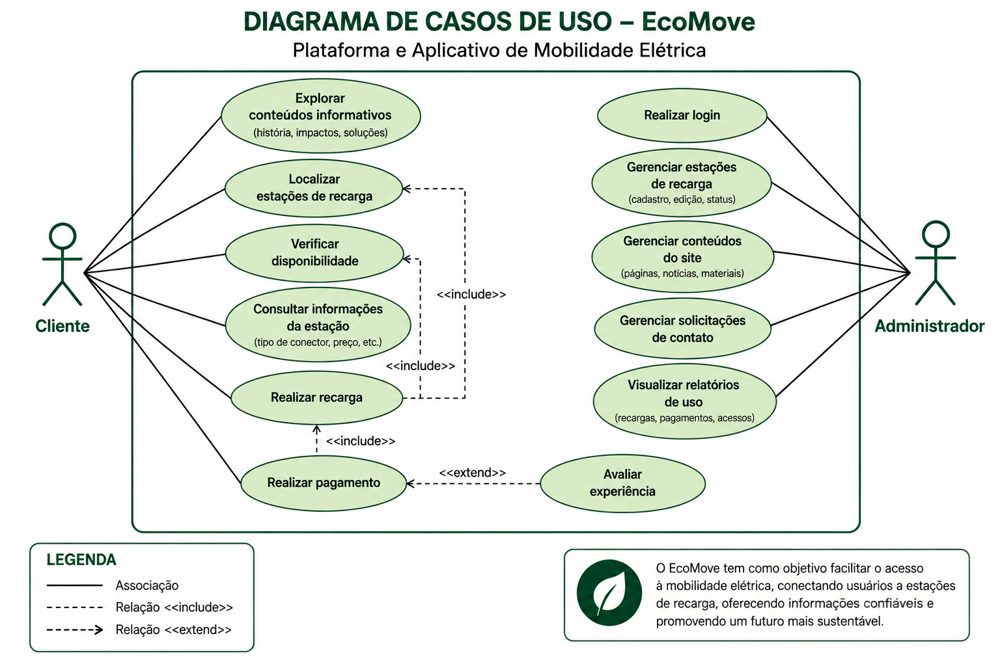
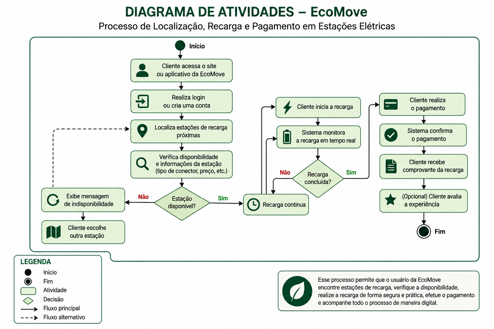

Para representar o funcionamento do sistema EcoMove, foram desenvolvidos diagramas UML que mostram as interações dos usuários com a plataforma e o fluxo de algumas atividades realizadas no sistema.

Diagrama de Casos de Uso
O Diagrama de Casos de Uso representa as principais funções disponíveis no sistema EcoMove e mostra como o cliente e o administrador interagem com a plataforma.
O cliente pode utilizar o sistema para localizar estações de recarga, verificar a disponibilidade dos carregadores, consultar informações, realizar a recarga do veículo e efetuar o pagamento pelo serviço.
Já o administrador utiliza o sistema para gerenciar informações, carregadores e outros recursos necessários para o funcionamento da plataforma EcoMove.

Diagrama de Atividades
O Diagrama de Atividades apresenta o processo de utilização do sistema EcoMove para localizar uma estação, realizar a recarga de um veículo elétrico e efetuar o pagamento.
O processo começa com o acesso do cliente à plataforma. Em seguida, ele localiza estações próximas e verifica a disponibilidade do carregador. Caso esteja disponível, o cliente pode iniciar a recarga e acompanhar o processo até sua conclusão.
Após a recarga, o pagamento é realizado e confirmado pelo sistema, finalizando o processo. O diagrama também apresenta caminhos alternativos para situações como a indisponibilidade de uma estação.